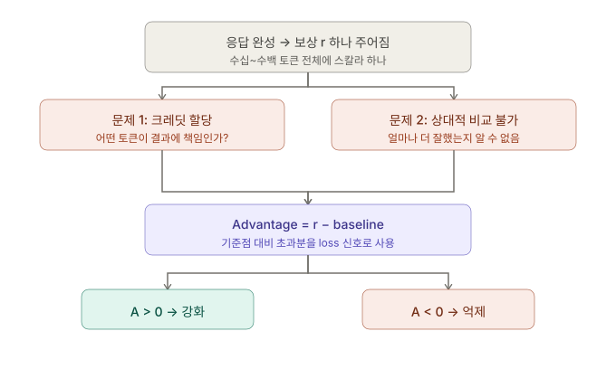
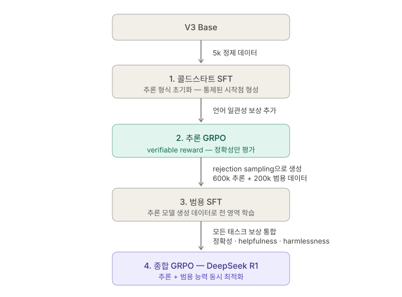
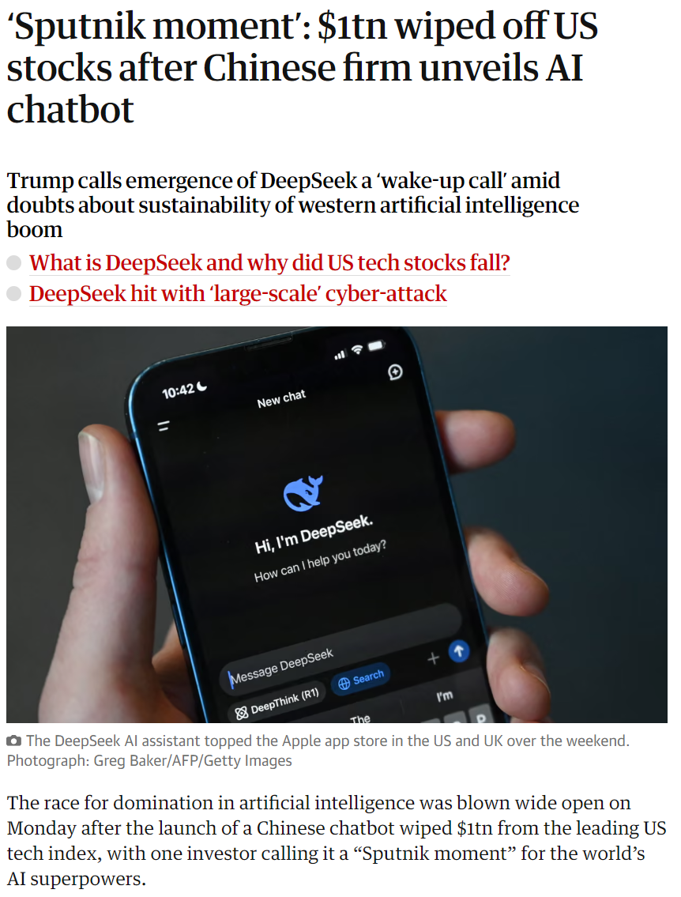
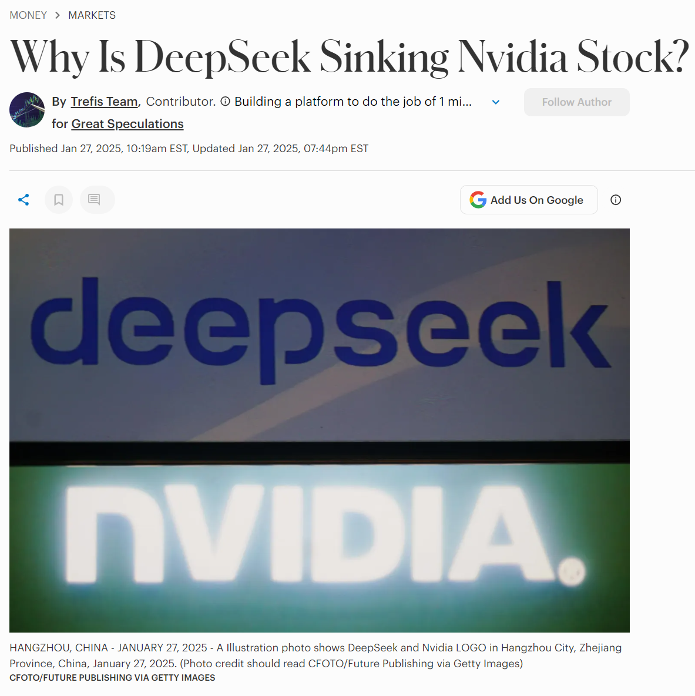

RL Reasoning Revolution
PPO, GRPO, DeepSeek R1
1. 추론을 강화학습(RL)으로 푸는 이유
왜 추론을 지도학습(SFT)으로 가르치려 하면 한계에 부딪히는가?
지도학습(SFT)의 한계
데이터 형태
사람이 모든 과정을 직접 적어야 함.
- 비용: 사람이 직접 수많은 추론 단계를 라벨링해야 함.
- 편향(Human Bias): 인간의 추론 방식이 AI에게 최적은 아님.
- 다중 경로: 정답에 이르는 다양한 길 중 무엇을 표준으로 삼을 것인가?
강화학습(RL)의 우회적 접근법
중간 과정은 모델에게 맡기고, 최종 결과값(Answer)만 평가.
2. GRPO vs PPO
보상 최적화
RL의 두 가지 목표
1. 보상 최대화
올바른 답변의 생성 확률을 높임.
2. 기존 지식 유지 (이탈 방지)
원본 베이스 모델에서 너무 벗어나지 않도록 페널티를 부여함.
리워드에서 Advantage로
RL의 핵심: 마지막 보상을 어떻게 Loss로 바꿀 것인가?

PPO (Proximal Policy Optimization)

보상을 예상치 대비 얼마나 잘했는가?(Advantage)로 변환.
- \( R_t \) = t 시점부터의 실제 누적 보상 (Return)
- \( V(s_t) \) = t 시점에서 예상되는 누적 보상
- \( A_t \) = 실제로 받은 것 - 예상했던 것 = 예상보다 얼마나 더 잘했는가
문제점: 정책 모델 외에 거대한 Value 모델을 하나 더 메모리에 올려야 함.
GRPO의 혁신

Value 모델을 완전히 제거하고, 그룹 내부 상대평가로 Advantage를 계산함.
하나의 프롬프트에서 G개의 서로 다른 답변을 생성한 뒤 평균을 기준으로 평가함.
아키텍처 비교

Trade Off

목적 함수 구조 비교
PPO Objective
PPO 모델의 구조를 차용
- Ratio (\( r_\theta \)): 이전 모델 대비 토큰 선택 확률 변화율
- Clipping \( (1-\epsilon, 1+\epsilon) \): 정책이 급격하게 변하는 것을 방지
목적 함수 구조 비교
GRPO Objective
KL Divergence 페널티를 추가함
- KL Divergence \( \mathbb{D}_{KL} \): 범용적인 언어 능력 파괴 방지
3. Stalled Performance 문제
길어지는 응답 길이와 길이 정규화의 함정
응답 토큰 길이가 계속 길어지는 현상
일정 스텝 이후, 모델이 성능은 정체되는데 응답만 길게 쓰는 패턴을 보임.

원인은 기존 수식의 페널티 구조
전체 GRPO 손실 함수 내 길이 정규화 항
위 식에서 볼 수 있듯, 각 토큰이 받는 어드밴티지는 1 / |o_i| 에 의해 응답 길이만큼 나누어짐.
리워드 해킹

해결책: DAPO 와 Dr. GRPO
DAPO 방식
전체 그룹 길이의 합으로 나누어, 모든 토큰이 동일한 1/Σ|o_j| 가중치를 받음.
Dr. GRPO 방식
개별 답변 길이 정규화를 아예 없애고, 텍스트가 극단적으로 길어질 때만 명시적인 감점을 부여함.
Understanding R1-Zero-Like Training: A Critical Perspective, Liu et al., 2025.
4. DeepSeek R1
RL 추론 파이프라인
R1-Zero의 한계
성공: 추론 벤치마크 평가

실패: 가독성
순수 강화학습 추론 모델은 추론 성능은 좋아졌지만 포맷이 정리되어 있지 않아 결과물을 인간이 읽기 매우 힘듦 (Language Mixing).
DeepSeek R1 파이프라인

DeepSeek R1 파이프라인
DeepSeek R1이 시장에 미친 충격


Forbes (2025). Why DeepSeek Is Sinking Nvidia Stock.
Distillation (지식 증류)
작은 모델에 추론 능력 이식하기
추론 궤적 추출
SFT 지도학습 전파


RL 단계 없이 SFT만으로 작은 모델에 추론 성능을 이식함.